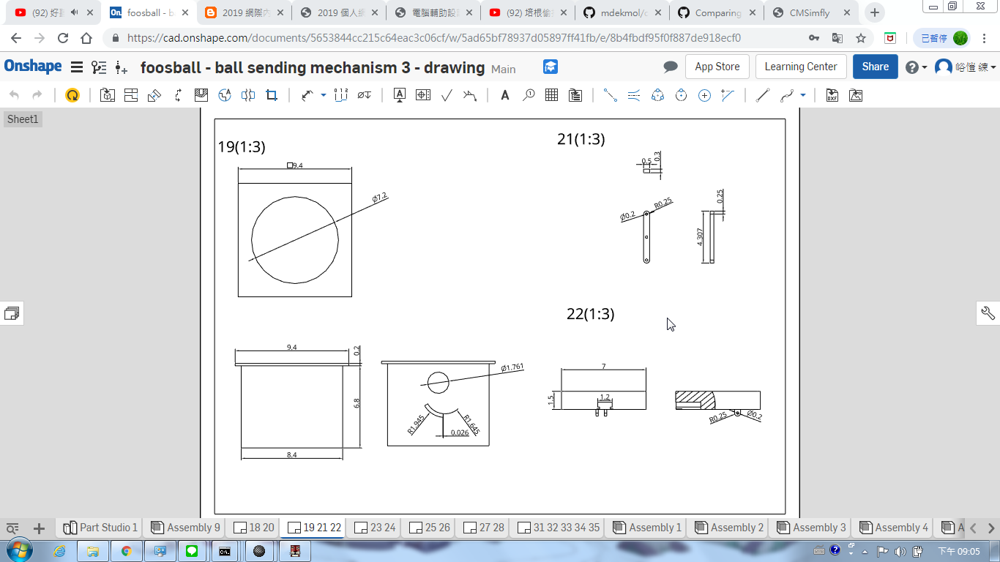
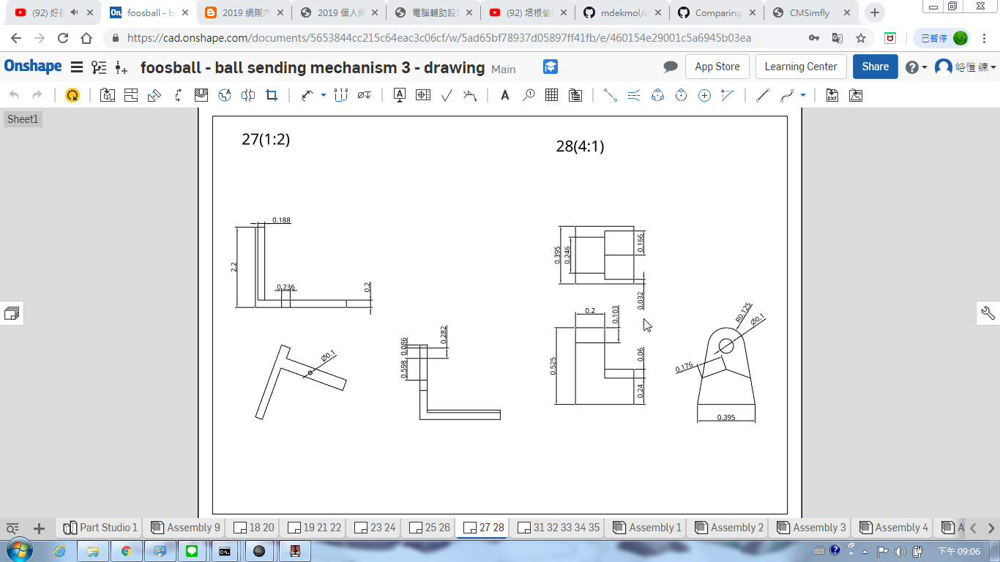
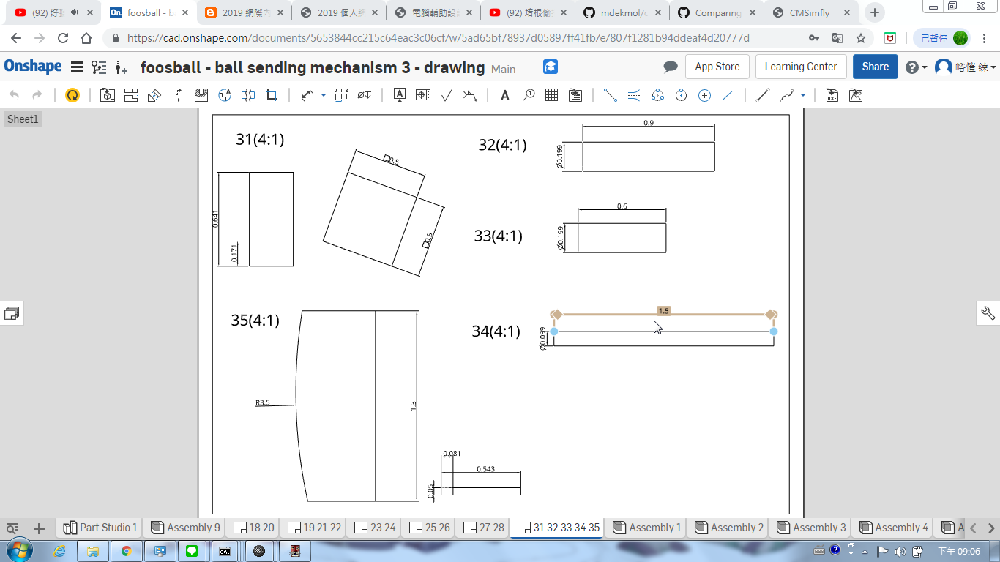

上課內容所學:
１．帶筆記本，耳機，隨身碟
２．在github帳號下，新增一個New repository，名為 : 學號.github.io
3.將自己新增的倉儲與老師的倉儲 clone 下來
4.將老師的資料複製，除了 .git 和 README.me 全部貼入自己的資料夾
5.綁定帳號


6.用 git status 查看所有檔案目前的狀況，之後再 git add . > git commit -m "initial add " >git push ，將剛剛新增的檔案推上去
7.開啟 python wsgi.py ，進入近端，更改標題名稱
8.重複git status> git add。> git commit -m“在標題上添加名稱”> git push後完成